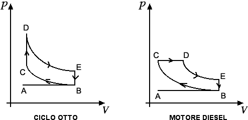

Termodinamica
Tipologia di macchine termiche
Nella sezione precedente abbiamo visto che il rendimento di una macchina termica è sempre un numero minore di 1. Ogni macchina termica assorbe del calore da una sorgente calda posta a temperatura T2 (che ha il compito di generare l'espansione del gas) e cede parte del suo calore a una sorgente fredda posta a temperatura T1 (che ha il compito di ricomprimere il gas). Si può dimostrare che la migliore macchina che opera tra la temperatura T2 della sorgente calda e la temperatura T1 della sorgente fredda è data dal ciclo di Carnot, trasformazione ciclica con rendimento pari a r = 1 - T1 / T2. Le temperature che compaiono nella precedente formula sono le temperature assolute delle due sorgenti. Ad esempio se una macchina termica lavora tra 20°C e 500°C il suo rendimento è pari a
r = 1 - (20 + 273.15) / (500 + 273.15) = 0.62 = 62%.
Su questi principi fisici di funzionamento si basa la centrale termoelettrica. Una certa quantità d'acqua viene posta a contatto con una sorgente di calore: il vapore che si crea serve per mettere in movimento una turbina che, collegata a un alternatore, consente la produzione di energia elettrica. Il ciclo viene completato grazie a un condensatore con il quale si ritrasforma il vapore in acqua che viene immessa nuovamente nel ciclo. Se il condensatore funziona a 100°C e il vapore ha una temperatura di 500°C il rendimento teorico della centrale termoelettrica risulta r = 52%. Nella realtà i rendimenti delle centrali termoelettriche sono attorno al 35%, il resto è calore che viene immesso nell'ambiente.
Le prime macchine termiche sono legate ai nomi di Savery, Papin, Newcomen e Watt. Nel XVIII secolo si cominciarono a usare le macchine a vapore di tipo industriale, prima nelle miniere, poi nelle industrie tessili o ferroviarie. Le macchine termiche si dividono in due grandi categorie:- a combustione esterna, quando la produzione del calore è esterna alla macchina, come avviene nelle macchine a vapore menzionate sopra,
- a combustione interna, quando la produzione di calore è interna alla macchina, come ad esempio nei motori a scoppio o nei motori diesel il cui funzionamento verrà ora brevemente illustrato.

Il ciclo Otto viene utilizzato nei motori a benzina e, come emerge dalla figura di sinistra, consta di diverse trasformazioni termodinamiche: la prima fase è costituita dall'aspirazione della miscela aria-benzina dal carburatore, in cui si ha un'espansione da A a B del gas a pressione atmosferica. Il secondo tempo è costituito da una compressione adiabatica (ossia senza scambio di calore) da B a C della miscela da parte del pistone. L'accensione della miscela o scoppio corrisponde alla trasformazione isocora da C a D con aumento di pressione ed è seguita dall'espansione adiabatica da D ad E, durante la quale il gas compie lavoro sul pistone. Infine la fase di scarico è costituita dalla trasformazione isocora da E a B che avviene con diminuzione della pressione dovuta all'apertura della valvola di scarico e alla fuoriuscita dei gas.
La figura di destra invece illustra il funzionamento del motore Diesel, un motore a 4 tempi realizzato alla fine dell'Ottocento da Rudolf Diesel. Al posto del carburatore c'è un iniettore che spruzza goccioline di gasolio mescolate ad aria compressa. La compressione dell'aria (300 atmosfere) riesce a produrre temperature attorno ai 700°C, in grado di dare origine all'accensione del combustibile (fase C-D nella figura). In ogni trasformazione ciclica (corrispondente a un giro del motore) viene prodotto un lavoro pari all'area della superficie racchiusa dalle trasformazioni.